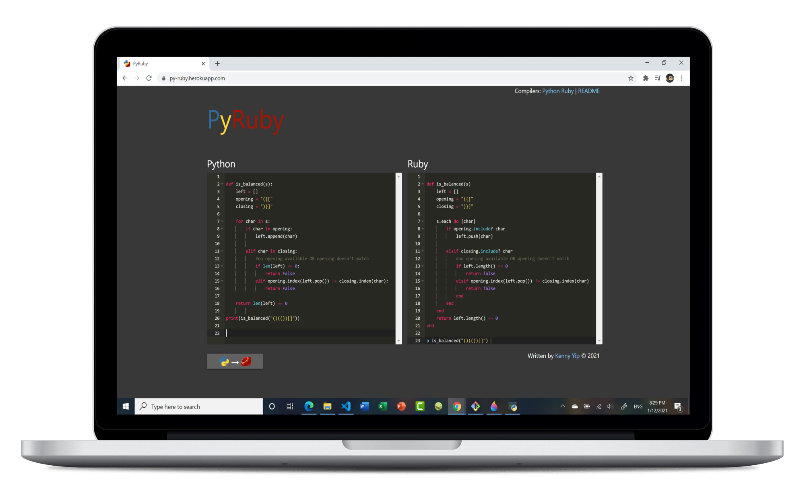

PyRuby

PyRuby is a web application built with Flask that translates short Python code to Ruby code. The purpose of this project is educational and was made to quickly learn Ruby syntax based on familiarity with Python syntax. An editor is built into the page to provide a code input environment. JQuery is used to submit the Python code for conversion. Conversion involves parsing through the Python code and replacing code block structure with their Ruby counterparts.
Currently in development.

Kenny Yip © 2020